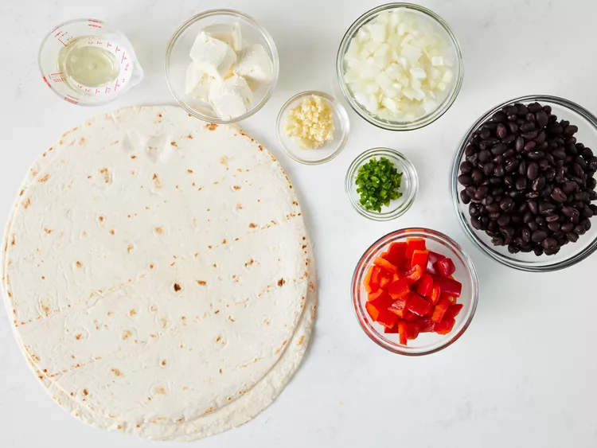
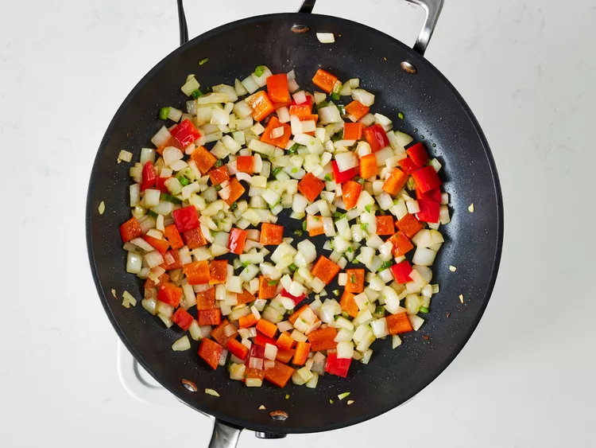
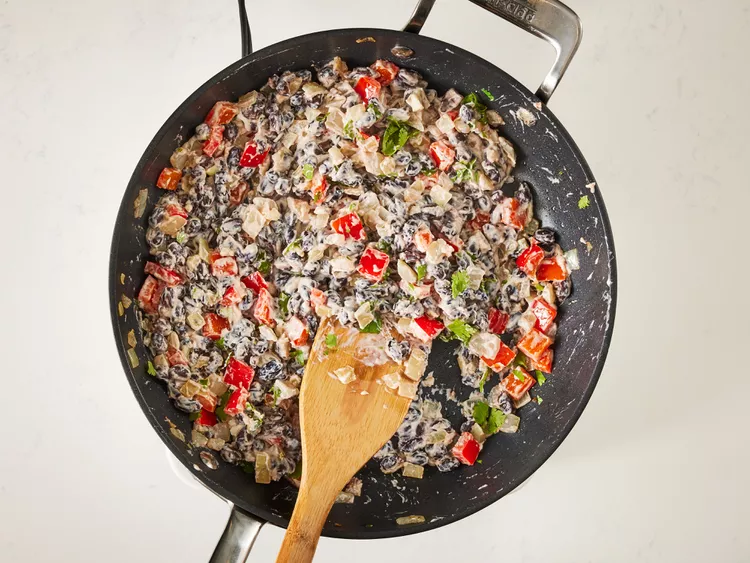
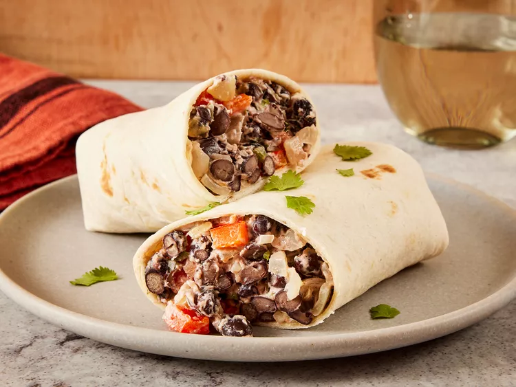

Delicious Black Bean Burritos
Back to HomeThis bean burrito recipe makes a creamy and flavorful filling with lots of cheese and onion. They are so good that you'll want to have them every night!

Ingredients
- 2 (10 inch) flour tortillas
- 2 tablespoons vegetable oil
- 1 small onion, chopped
- ½ red bell pepper, chopped
- 1 teaspoon minced garlic
- 1 teaspoon minced jalapeño peppers
- 1 (15 ounce) can black beans, rinsed and drained
- 3 ounces cream cheese, cubed
- ½ teaspoon sal
- 2 tablespoons chopped fresh cilantro
Directions
-
Step 1
Gather all ingredients. Preheat the oven to 350 degrees F (175 degrees C). Wrap tortillas in foil.

-
Step 2
Bake wrapped tortillas in the preheated oven until heated through, about 15 minutes
-
Step 3
Meanwhile, heat oil in a 10-inch skillet over medium heat. Add onion, bell pepper, garlic, and jalapeño; cook and stir for 2 minutes.

-
Step 4
Stir in beans and cook until heated through, about 3 minutes. Stir in cream cheese and salt; cook, stirring occasionally, for 2 minutes. Stir in cilantro.

-
Step 5
Spoon filling in a line across the middle of each tortilla. Fold opposing edges of the tortilla to overlap the filling. Roll 1 of the opposing edges around the filling creating a burrito. Serve immediately.
